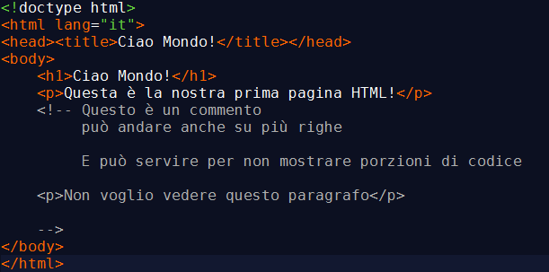

Cos'è un commento in HTML
- Un commento in HTML è un'annotazione che può essere aggiunta al codice HTML senza influire sul rendering della pagina web.
- I commenti in HTML sono delimitati dai tag < !-- e -- > e tutto ciò che si trova all'interno di questi tag viene considerato un commento.
- I commenti in HTML sono utilizzati per scopi di documentazione, per fare note sul codice o per disattivare temporaneamente una parte del codice.
< !-- questo è un commento -- >
I commenti permettono di inserire note o spiegazioni nel codice HTML che non verranno visualizzate nel browser. I commenti possono anche essere utilizzati per disabilitare temporaneamente parti di codice durante lo sviluppo.
< p >Questo paragrafo si vede< /p >
< !-- < p >Questo paragrafo non si vede< /p >-- >

Contrassegnare la chiusura dei tag: div e non solo
- L'uso dei commenti è una pratica comune per contrassegnare la fine di un blocco di codice HTML.
- Questa pratica è spesso utilizzata per elementi blocco come i tag < div > che definiscono la struttura (layout) di una pagina.
- Aggiungendo un commento che identifica la classe o l'id di un elemento, è possibile posizionare il codice in modo più leggibile e comprensibile.
< div id="main" >
< article >
...
contenuto
< /article >
< div class="mybox" >
< ul >
< li >... < /li >
< li >contenuto< /li >
< /ul >
< /div >< !--/.mybox-- >
< /div >< !--/#main-- >